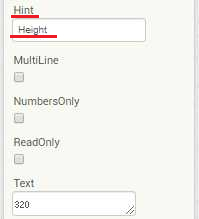
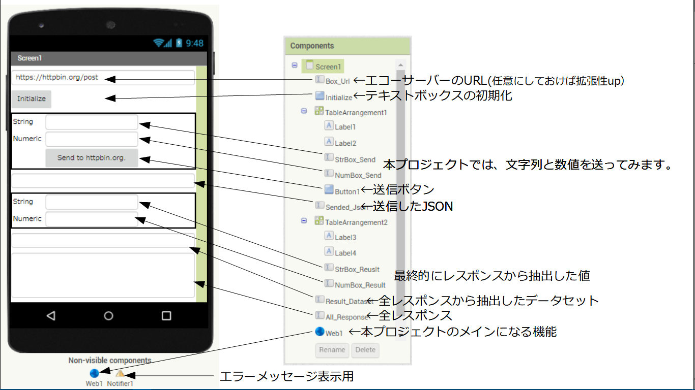

App Inventor 2において、カメラ画像やローカルに保存された画像を扱う方法を、以下のような処理を行うプログラムを作りながら習得します。
「カメラ起動ボタンもしくは画像選択ボタンをクリック」
「画像の取込み」
「画像保存ボタンをクリック」
「画像保存」
表示だけであれば、 Imageコンポーネントを使います。しかし、Imageコンポーネントは画像の編集や保存はできませんので、Canvasコンポーネントを今回は使います。
デザイナーでの作業
App Inventor 2において、カメラ画像やローカルに保存された画像を扱う方法を、以下のような処理を行うプログラムを作りながら習得します。
「カメラ起動ボタンもしくは画像選択ボタンをクリック」
画像1
Width と Heigh の部分には、Layout の TableArrangement を使っています。2行2列の設定にしています。
画像2
ちなみに、TextBox などにある Hint というのは、TextBoxに何も入力されていない時に、ここで設定した文字列が薄い色で表示されます。何を入力したら良いかのヒントを表示するようにします。

画像3
コンポーネントが増えてきたら、画像1の Components画面のように分かりやすい名前にしておくと、ブロック エディターでの作業が楽になります。
Width と Height は Canvas のサイズを指定します。保存される画像のサイズに関係します。
ブロック エディターでの作業
ブロック エディターで以下のように、コンポーネントを配置します。
画像4
これだけです。以下は実際にスマホで実行した際の画面です。
画像5
一番下の TextBox に保存先が出力されるようになっています。
ちなみに、私の環境ではSDカードの /My Documents/Picturesディレクトリに保存されました。
（/storage/emulated/0/My Documents/Pictures）
保存先を出力しなくても良い場合は、Built-In の Control の 「evaluate but ignore result」を利用します。
画像6
保存された画像サイズは、Width と Height で指定した数の2倍の大きさになっていました。
サンプルプログラム
こちらにプロジェクトやapkファイルをおいておきます。参考にしてください。

ひとこと
「Camera1.TakePicture」すると、実は撮像画像がファイルに保存されます。
ファイル名は、「When Camera1.AfterPicture」における「get image」がそうです。実は、「get image」で得られるのは画像データではなく、撮像した画像を保存するファイル名だったのです。
すると、上のアプリも画像サイズ変換アプリのようにも見えてきます。